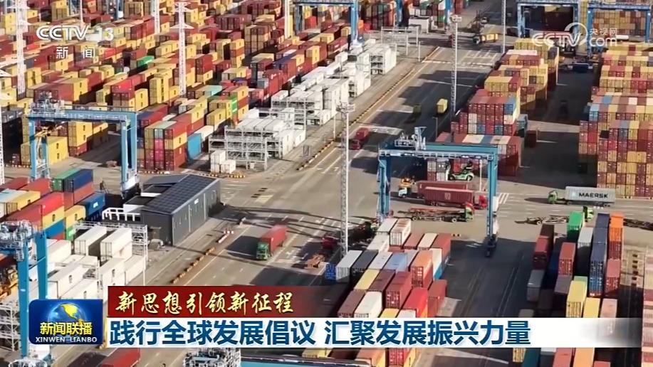
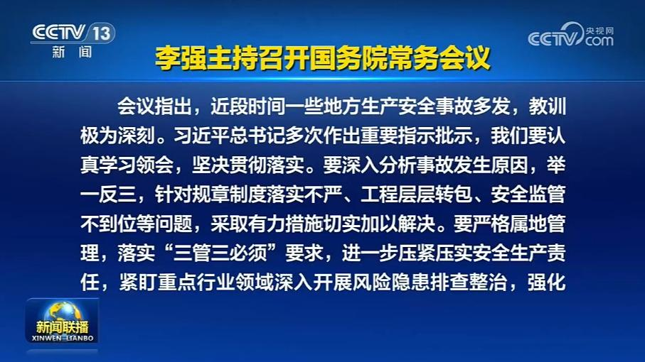
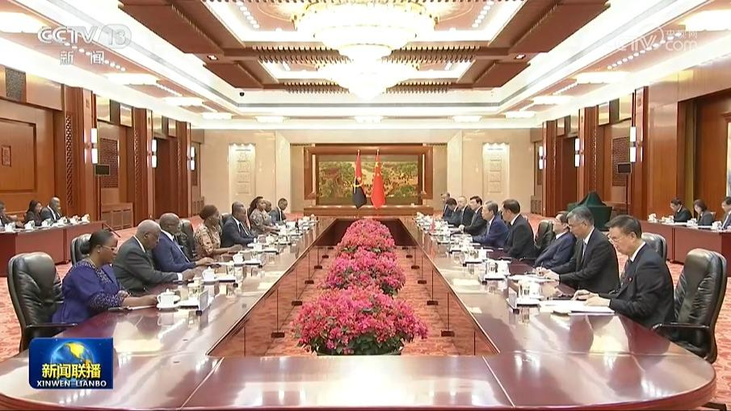
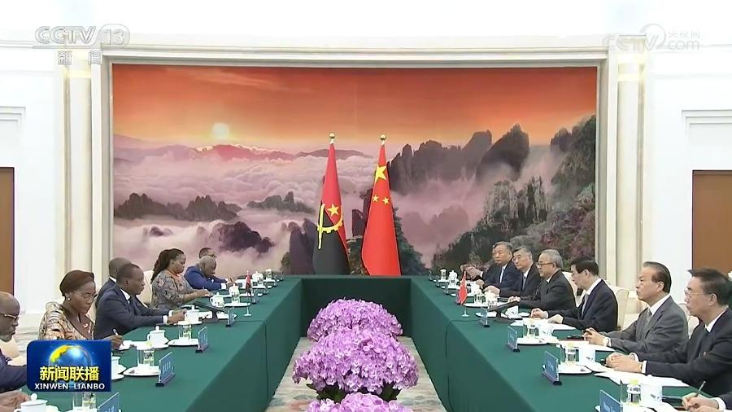
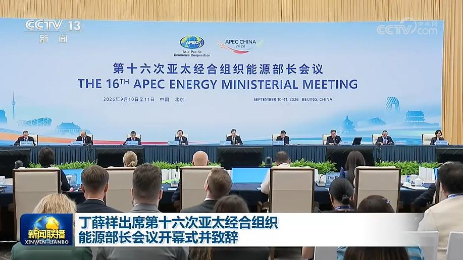
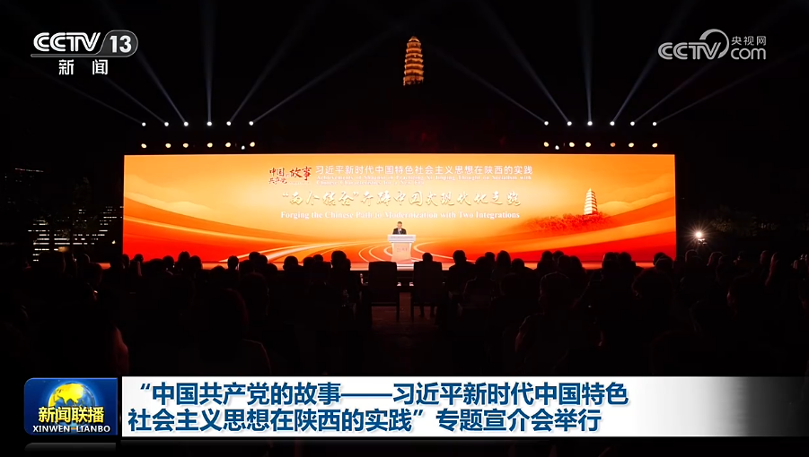
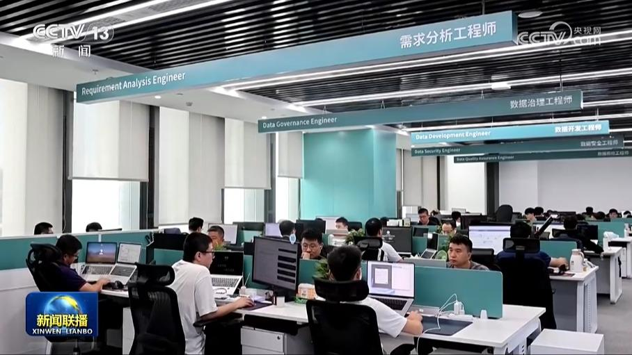
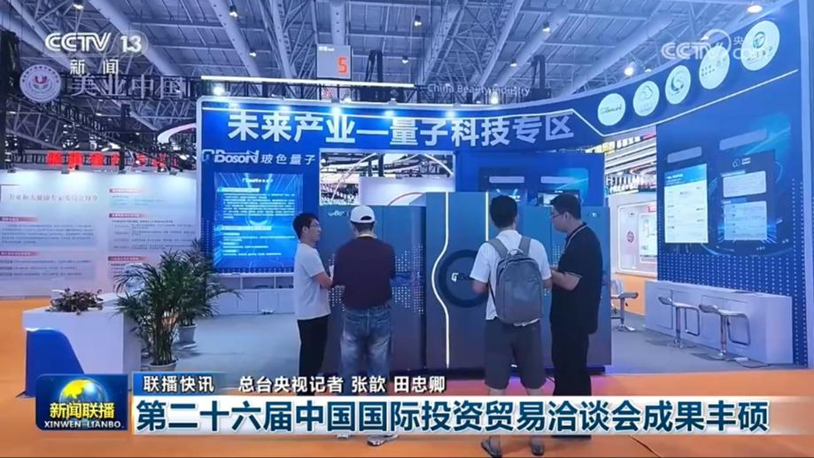
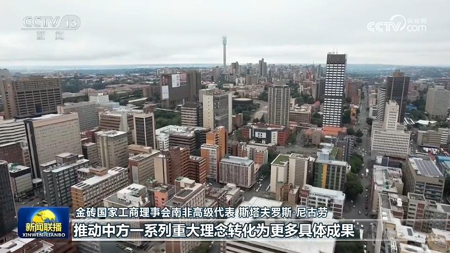
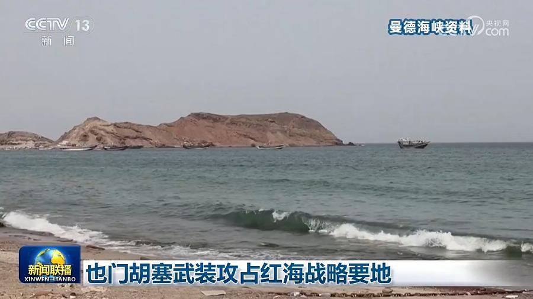

01

【新思想引领新征程】践行全球发展倡议 汇聚发展振兴力量
发展，是人类社会的永恒主题，也是全人类的共同价值。面对全球发展事业何去何从的时代之问，2021年9月，习近平主席郑重提出全球发展倡议，为重振全球发展事业提供了中国方案。全球发展倡议始终将发展置于国际议程中心位置，回应了各国人民谋发展、促繁荣的共同期盼。5年来，从中国主张到国际共识，从合作理念到共同行动，全球发展倡议结出累累硕果，在变乱交织的世界中不断汇聚共同发展振兴的强大力量。


发展，是人类社会的永恒主题，也是全人类的共同价值。面对全球发展事业何去何从的时代之问，2021年9月，习近平主席郑重提出全球发展倡议，为重振全球发展事业提供了中国方案。全球发展倡议始终将发展置于国际议程中心位置，回应了各国人民谋发展、促繁荣的共同期盼。5年来，从中国主张到国际共识，从合作理念到共同行动，全球发展倡议结出累累硕果，在变乱交织的世界中不断汇聚共同发展振兴的强大力量。

国务院总理李强9月11日主持召开国务院常务会议，对加强安全生产工作作出进一步部署，研究算力网建设有关工作，研究全面系统推进老旧水库改造提升有关工作，听取贯彻落实全国教育大会精神加快建设教育强国情况汇报，审议通过《基金会管理条例（修订草案）》。
国务院总理李强日前签署国务院令，公布《市场监督管理所条例》（以下简称《条例》），自2026年11月1日起施行。

全国人大常委会委员长赵乐际11日在北京人民大会堂同安哥拉国民议会议长德阿尔梅达举行会谈。

全国政协主席王沪宁11日在京会见安哥拉国民议会议长德阿尔梅达。王沪宁表示，2024年，习近平主席同访华的洛伦索总统共同宣布将中安关系提升为全面战略合作伙伴关系，为两国关系发展作出了战略指引。中方愿同安方一道，落实两国元首重要共识，赓续传统友谊，深化务实合作，加强多边协调，推动中安关系迈向更高水平。中国全国政协愿为推动中安两国各自实现现代化作出积极贡献。

第十六次亚太经合组织能源部长会议10日在北京开幕，中共中央政治局常委、国务院副总理丁薛祥出席并致辞。

由中共中央对外联络部和中共陕西省委共同主办的“中国共产党的故事——习近平新时代中国特色社会主义思想在陕西的实践”专题宣介会，10日在陕西省延安市举行。
中国物流与采购联合会今天（9月11日）发布8月份中国电商物流指数，指数升至年内较高水平，电商物流活力进一步提升。

记者今天（9月11日）从国家数据局了解到，我国正式推行数据产权登记制度。登记机构将为各类形态数据出具“身份证明”，明确数据持有权、数据使用权、数据经营权等权利归属，更好支撑数据流通交易、数据资产入表、融资担保、作价入股等生产经营活动。

第二十六届中国国际投资贸易洽谈会成果丰硕

在习近平主席即将赴印度出席金砖国家领导人第十八次会晤之际，国际人士表示，中国是金砖合作机制的坚定支持者和参与者，期待习主席此行同各方共同描绘“大金砖合作”高质量发展蓝图，为世界注入更多稳定性与正能量。

也门政府军消息人士10日表示，也门胡塞武装当天攻占了也门西南部塔伊兹省战略要地、红海港口城市穆哈，政府军被迫向南撤离。穆哈距离重要国际航道曼德海峡约80公里。同一天，也门政府军撤出另一处红海战略要地哈尼什群岛，胡塞武装随后在岛上部署兵力并建立阵地。哈尼什群岛位于曼德海峡以北，具有监控和保障海上交通安全的重要战略价值。
伊朗称击毁美无人艇 美否认战机受损